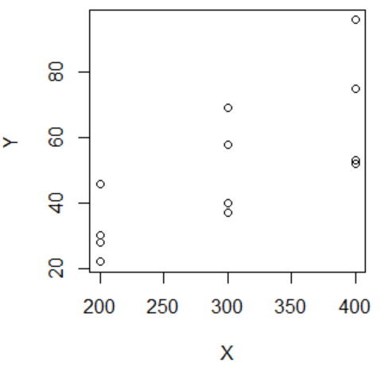
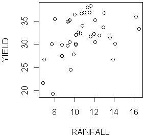
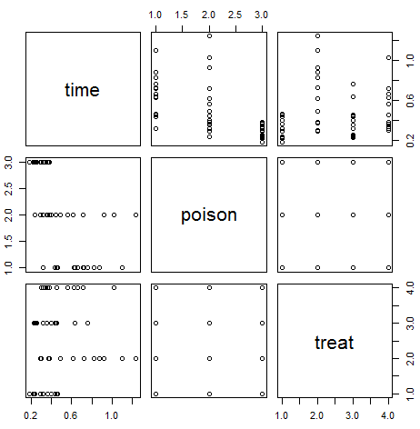
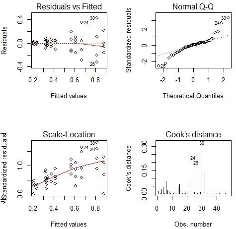
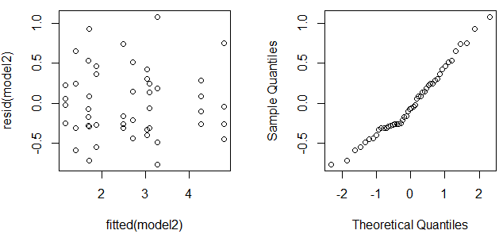

เสริม Lesson 3 · ฝึกกับโจทย์จริง (Assignment 3 + 9)
Reference: Diagnostics Cheat Sheet →
Lecture 3 — Regression Diagnostics and Remedies (Walkthrough)
Diagnostics & Remedies Walkthrough: 4 โจทย์จริงจาก Assignment 3 และ 9
บทเรียนนี้ต่อจาก Lesson 3 โดยตรง — แทนที่จะดูภาพสไลด์ที่ครูเตรียมไว้ เราจะไล่ดู โจทย์การบ้านจริงที่มีเฉลย 4 ข้อ ที่ต้องใช้ทักษะเดียวกันทุกอย่าง: อ่าน R output → เลือก diagnostic ที่ถูกต้อง → ตัดสินผ่าน/ไม่ผ่าน → เลือก remedy ที่เหมาะกับปัญหาที่เจอ. สามข้อแรกมาจาก Assignment 3 (Solution Concentration, Machine Speed, Rainfall & Corn Yield) ข้อสุดท้ายมาจาก Assignment 9 ข้อ 3 (Rats/Poison) ซึ่งวนกลับมาใช้ Box-Cox และ interaction interpretation อีกครั้งในบริบทใหม่.
ที่มา
Assignment3_Solution.pdf (ข้อ 1-3 ทั้งหมด) และ
Assignment9_Solution.pdf (เฉพาะข้อ 3 —
rats data จาก faraway package) — ตัวเลขทุกตัวคัดลอกจาก R output จริงในเฉลย ไม่มีตัวเลขแต่งขึ้น
1. Solution Concentration (solution.csv) — Transformation แก้ปัญหาซ้อนสองข้อพร้อมกัน
นักเคมีวัดความเข้มข้นของสารละลาย (Y) ตามเวลา (X) จาก 15 ตัวอย่าง (5 กลุ่มเวลา: 1, 3, 4, 7, 9 ชั่วโมง กลุ่มละ 3 ตัวอย่าง)
(a) Fit เชิงเส้นตรงก่อน
> summary(model)
Call:
lm(formula = Y ~ X, data = solution)
Coefficients:
Estimate Std. Error t value Pr(>|t|)
(Intercept) 2.5753 0.2487 10.354 1.20e-07 ***
X -0.3240 0.0433 -7.483 4.61e-06 ***
---
Residual standard error: 0.4743 on 13 degrees of freedom
Multiple R-squared: 0.8116, Adjusted R-squared: 0.7971
F-statistic: 55.99 on 1 and 13 DF, p-value: 4.611e-06สมการ: \(\hat{Y} = 2.5753 - 0.324X\)
R² = 0.8116 — ดูสูง สัมประสิทธิ์มีนัยสำคัญทั้งคู่ — ถ้าดูแค่ตัวเลขสรุปนี้ อาจรีบสรุปว่าโมเดล "ใช้ได้"
แต่ R² สูงไม่ได้แปลว่า assumption ผ่าน — ต้องดู residual plot กับ QQ plot ต่อเสมอ (นี่คือกับดักที่ข้อสอบชอบทดสอบ)
(b) เช็ค Assumption จาก Residual Plot + QQ Plot
Residuals vs Fitted และ Normal Q-Q ของ model (Y ~ X ไม่แปลงตัวแปร) — Assignment 3 ข้อ 1(b)
อ่านตัวเลข/รูปทรงจริงจากภาพ:
Residuals vs Fitted (ซ้าย): เส้น smoother สีแดงเป็นรูปตัว V ชัดเจน — เริ่มจากบวก (~0.4) ที่ fitted ต่ำ ลดลงต่ำสุดที่ fitted ≈ 1 (residual ≈ -0.4) แล้วดีดกลับขึ้นไปเป็นบวกอีกครั้งที่ fitted สูง (จุด 15 residual ≈ 0.85) — รูปตัว V นี้คือสัญญาณ lack of fit ตรงไปตรงมา → linearity ถูกละเมิด จุด 12 อยู่ต่ำสุดในกลุ่ม (fitted ≈ 1.6, residual ≈ -0.55) ส่วนจุด 15 อยู่สูงสุด (fitted ≈ 2.3, residual ≈ 0.85) — ช่วงของ residual ที่ fitted สูงกว้างกว่าช่วงที่ fitted ต่ำเล็กน้อย
Normal QQ (ขวา): จุดกลางเรียงตัวใกล้เส้นได้ในระดับหนึ่ง แต่จุด 12 (theoretical quantile ≈ -1.4, standardized residual ≈ -1.3) หลุดต่ำกว่าเส้น และจุด 15 (theoretical quantile ≈ 1.7, standardized residual = 2.0) หลุดสูงกว่าเส้นทั้งสองข้าง — รูปร่างโค้งแบบนี้เข้าข่าย skewed/long-tailed patternสรุปตามเฉลย: Linearity assumption ถูกละเมิด และ Constant variance assumption ถูกละเมิด
(c) Box-Cox หา λ ที่เหมาะสม
Box-Cox log-likelihood plot ของ model — Assignment 3 ข้อ 1(c)
จุดสูงสุดของ log-likelihood อยู่ที่ λ ≈ 0 พอดี — เส้นประ 95% CI ทั้งสามเส้นบีบตัวแคบมากรอบ λ=0 (ไม่ครอบคลุม λ=1 เลย ซึ่งหมายถึง "ไม่ต้องแปลง" ถูกปัดตกด้วย)
ตามตารางกรณีพิเศษของ Box-Cox (Lesson 3 หัวข้อ 8.2): λ=0 คือกรณีนิยามพิเศษที่แทนด้วย log(Y)
เฉลย: Box-Cox procedure แนะนำ log transformation
(d) Fit โมเดลกับ Y' = ln(Y)
> logmodel<-lm(log(Y)~X, data=solution)
> summary(logmodel)
Coefficients:
Estimate Std. Error t value Pr(>|t|)
(Intercept) 1.50792 0.06028 25.01 2.22e-12 ***
X -0.44993 0.01049 -42.88 2.19e-15 ***
---
Residual standard error: 0.115 on 13 degrees of freedom
Multiple R-squared: 0.993, Adjusted R-squared: 0.9924
F-statistic: 1838 on 1 and 13 DF, p-value: 2.188e-15สมการ: \(\ln(\hat{Y}) = 1.5079 - 0.4499X\)
R² กระโดดจาก 0.8116 เป็น 0.993 — เพิ่มขึ้นเกือบ 18 percentage points จากการแปลงตัวแปรตามตัวเดียว
Residual SE ลดลงจาก 0.4743 เหลือ 0.115 — โมเดลแม่นยำขึ้นมาก (แม้เทียบสเกลตรง ๆ ไม่ได้เพราะหน่วยเปลี่ยนเป็น log-scale)
(e) เช็ค Diagnostic ซ้ำหลังแปลง
Residuals vs Fitted และ Normal Q-Q ของ logmodel (log(Y) ~ X) — Assignment 3 ข้อ 1(e)
เทียบกับภาพก่อนแปลง (ข้อ 1b): เส้น smoother ตอนนี้ค่อนข้างราบใกล้ 0 ตลอดช่วง fitted (-2.5 ถึง 1.0) ไม่มีรูปตัว V แบบเดิม — จุด 8 อยู่สูงสุด (residual ≈ 0.2) และจุด 4 อยู่ต่ำสุด (residual ≈ -0.2) แต่ไม่ได้เรียงเป็นแนวโน้มเชิงระบบ
QQ plot: จุดเกาะเส้นทแยงได้แนบสนิทมากตลอดช่วง มีแค่จุด 4 กับ 8 เบี่ยงเล็กน้อยที่หางทั้งสองข้าง (เบี่ยงน้อยกว่าภาพก่อนแปลงมาก)
เฉลย: "No obvious pattern in the residuals plot. No assumptions are violated."
(f) แปลผลกลับหน่วยเดิม
\(e^{\hat{\beta}_1} = e^{-0.44993} \approx 0.64\)
แปลผล: การเพิ่มเวลา 1 ชั่วโมงสัมพันธ์กับการลดลงของค่าเฉลี่ยความเข้มข้นของสารละลาย (1-0.64)×100 = 36%
นี่คือรูปแบบการแปลผลมาตรฐานของโมเดล log(Y) ~ X: สัมประสิทธิ์ดิบตีความตรง ๆ ไม่ได้ ต้อง exponentiate ก่อนแล้วอ่านเป็น "ร้อยละที่เปลี่ยนแปลง"
คำถาม 1 Solution Concentration — Box-Cox
Box-Cox log-likelihood plot ของ model (ข้อ 1) มีจุดสูงสุดที่ λ ≈ 0 พอดี พร้อม 95% CI ที่แคบมากรอบ 0 (ไม่ครอบคลุม λ=1) นี่แปลว่าอะไร?
ไม่ต้องแปลงตัวแปรใด ๆ เพราะ λ ใกล้ 1 มากกว่า 0
ควรแปลง Y ด้วย log(Y) เพราะ λ=0 คือกรณีนิยามพิเศษของ Box-Cox ที่แทนด้วย log transformation และ CI ไม่ครอบคลุม λ=1 (ไม่แปลง) เลย
ควรแปลง Y ด้วย √Y เพราะ λ ใกล้ 0.5
Box-Cox procedure ใช้ไม่ได้กับข้อมูลชุดนี้เพราะ CI แคบเกินไป
คำถาม 2 (Free response) R² สูงไม่ได้แปลว่าผ่าน
โมเดลดิบในข้อ 1(a) มี R² = 0.8116 และสัมประสิทธิ์มีนัยสำคัญทางสถิติสูงมาก (p < 0.0001 ทั้งคู่) แต่เฉลยสรุปว่า linearity และ constant variance ถูกละเมิดทั้งคู่ จงอธิบายว่าทำไมตัวเลขสรุป (R², p-value) เพียงอย่างเดียวไม่พอจะบอกว่าโมเดลใช้ได้ และต้องดูอะไรเพิ่ม
เฉลย
R² และ p-value ของสัมประสิทธิ์บอกแค่ว่า "มีความสัมพันธ์เชิงเส้นระหว่าง X กับ Y ในระดับที่แรงพอจะตรวจจับได้ทางสถิติ" แต่ไม่ได้บอกว่ารูปแบบความสัมพันธ์นั้นเป็น "เส้นตรง" จริงหรือไม่ หรือ variance ของ error คงที่หรือไม่ — สองอย่างนี้เป็นคำถามคนละมิติ โมเดลอาจอธิบายความแปรผันของ Y ได้มาก (R² สูง) ในขณะที่ยังพลาดรูปแบบโค้งที่แท้จริงไป (residual มีแนวโน้มเป็นระบบ) ในกรณีนี้ residual vs fitted เป็นรูปตัว V ชัดเจน — สัญญาณของ lack of fit ที่ไม่มีทางเห็นได้จาก R² หรือ p-value เพียงอย่างเดียว ต้องดู diagnostic plot เสมอไม่ว่าตัวเลขสรุปจะดูดีแค่ไหน (เป็นเหตุผลเดียวกับที่ Lesson 3 เตือนว่าต้อง plot ก่อนเชื่อค่าสรุปเสมอ)
2. Machine Speed (machinespeed.csv) — Weighted Least Squares
จำนวนชิ้นงานเสีย (Y) สัมพันธ์กับความเร็วตั้งค่าเครื่องจักร (X) โดยมีข้อมูล X ที่ระดับ 200, 300, 400
(a) Scatter Plot

Scatter plot ดิบ X vs Y — Assignment 3 ข้อ 2(a)
ที่ X=200 กลุ่มจุด Y อยู่ในช่วงแคบ (~22-46) ที่ X=300 ช่วงกว้างขึ้น (~37-69) และที่ X=400 ช่วงกว้างที่สุด (~52-96)
เฉลย: "X has a positive linear relationship with Y" — แต่สังเกตได้แล้วตั้งแต่ตรงนี้ว่าความกว้างของกลุ่มจุด (spread) เพิ่มขึ้นตาม X ด้วย เป็นสัญญาณเตือนล่วงหน้าของปัญหาในข้อถัดไป
(b) Fit OLS
> summary(model)
Coefficients:
Estimate Std. Error t value Pr(>|t|)
(Intercept) -5.75000 16.73052 -0.344 0.73820
X 0.18750 0.05381 3.484 0.00588 **
---
Residual standard error: 15.22 on 10 degrees of freedom
Multiple R-squared: 0.5484, Adjusted R-squared: 0.5032
F-statistic: 12.14 on 1 and 10 DF, p-value: 0.005878สมการ: \(\hat{Y} = -5.75 + 0.19X\)
(c) Residual vs X — เช็ค Constant Variance
resid(model) vs X — Assignment 3 ข้อ 2(c)
ที่ X=200 residual อยู่ในช่วงแคบประมาณ -10 ถึง 14 (กว้าง ~24)
ที่ X=300 ช่วงกว้างขึ้นเป็นประมาณ -14 ถึง 19 (กว้าง ~33)
ที่ X=400 ช่วงกว้างที่สุดประมาณ -17 ถึง 27 (กว้าง ~44) — เกือบสองเท่าของช่วงที่ X=200
รูปทรง "กรวยบาน" (megaphone) นี้ตรงกับแผง ✗ ในหัวข้อ 5 ของ Lesson 3 เป๊ะ — เฉลย: "The constant variance assumption is violated"
(d)-(e) ประมาณ Weight แล้วทำ Weighted Least Squares
ขั้นตอน: e2<-resid(model)^2 → fit varfn<-lm(e2~X) → w<-1/fitted(varfn)
> w
1 2 3 4 5 6
0.014563107 0.003150433 0.005180229 0.003150433 0.014563107 0.005180229
7 8 9 10 11 12
0.005180229 0.003150433 0.014563107 0.003150433 0.014563107 0.005180229
Observation ที่ X=200 (variance เล็กสุดจากภาพข้อ c) ได้ weight สูงสุด 0.01456 ; ที่ X=400 (variance ใหญ่สุด) ได้ weight ต่ำสุด 0.00315 ; ที่ X=300 อยู่ตรงกลาง 0.00518 — ตรงกับหลักการ \(w_i=1/\hat{v}_i\) ใน Lesson 3 หัวข้อ 9 พอดี: variance ยิ่งมาก weight ยิ่งน้อย
> wtmodel<-lm(Y~X, data=speed, weight=w)
> summary(wtmodel)
Coefficients:
Estimate Std. Error t value Pr(>|t|)
(Intercept) -6.23322 13.16843 -0.473 0.64613
X 0.18911 0.05056 3.740 0.00385 **
---
Residual standard error: 1.109 on 10 degrees of freedom
Multiple R-squared: 0.5831, Adjusted R-squared: 0.5414
F-statistic: 13.99 on 1 and 10 DF, p-value: 0.003846
สัมประสิทธิ์ X แทบไม่เปลี่ยน: 0.18750 (OLS) → 0.18911 (WLS) — ค่าประมาณจุดใกล้เคียงกันมาก
สิ่งที่เปลี่ยนคือ Std. Error ของ X ลดลงเล็กน้อย (0.05381 → 0.05056) และ p-value ดีขึ้น (0.00588 → 0.00385) — WLS ให้ inference ที่แม่นยำกว่าเพราะไม่ปล่อยให้ observation ที่มี variance สูง (X=400) มีอิทธิพลเท่ากับ observation ที่ variance ต่ำ (X=200) เหมือน OLS ธรรมดา
เฉลยสรุปตรง ๆ ว่า: "Yes, there are similar" — ค่าประมาณ WLS กับ OLS ใกล้เคียงกัน (สอดคล้องกับทฤษฎีที่ว่า OLS ยัง unbiased แม้ constant variance จะพัง เพียงแต่ไม่ efficient เท่า WLS)
คำถาม 3 Machine Speed — Weight Formula
จากผล w ในข้อ 2(d): observation ที่ X=200 ได้ weight ≈ 0.01456 (สูงสุด) ส่วน observation ที่ X=400 ได้ weight ≈ 0.00315 (ต่ำสุด) เพราะเหตุใด?
เพราะ X=200 มีจำนวน observation มากกว่า X=400
เพราะ residual ที่ X=200 กระจายแคบกว่า (variance ต่ำกว่า) ตามภาพ residual-vs-X ในข้อ (c) — weight = 1/variance จึงสูงกว่าที่ X=400 ซึ่ง variance กว้างสุด
เพราะ weight ถูกกำหนดแบบสุ่มไม่เกี่ยวกับ variance
เพราะ X=200 อยู่ใกล้ค่าเฉลี่ยของ X มากกว่า
คำถาม 4 Machine Speed — OLS vs WLS
เปรียบเทียบ OLS (ข้อ b) กับ WLS (ข้อ e): สัมประสิทธิ์ X เปลี่ยนจาก 0.18750 เป็น 0.18911 (แทบไม่เปลี่ยน) แต่ Std. Error ลดลงจาก 0.05381 เป็น 0.05056 สรุปได้ว่าอย่างไร?
OLS ให้ค่าประมาณที่ผิด (biased) จึงต้องใช้ WLS แทน
OLS ยังคงเป็น unbiased estimator (ค่าประมาณใกล้เคียงกัน) แต่ไม่ efficient เท่า WLS เมื่อ constant variance ถูกละเมิด — WLS ให้ SE ที่แม่นยำกว่าเพราะถ่วงน้ำหนักตาม variance ของแต่ละจุด
ความแตกต่างนี้เกิดจาก sample size ที่ต่างกันระหว่างสองโมเดล
WLS ใช้ไม่ได้กับข้อมูลชุดนี้เพราะให้ผลต่างจาก OLS มาก
3. Rainfall and Corn Yield (corn.csv) — Time Trend + Interaction
ผลผลิตข้าวโพด (bu/acre) และปริมาณน้ำฝน (inches) รายปี 1890-1927 จาก 6 รัฐผลิตข้าวโพดหลักของสหรัฐฯ
(a) Scatter: Yield vs Rainfall

Scatter plot Yield vs Rainfall — Assignment 3 ข้อ 3(a)
จุดกระจายค่อนข้างมาก ไม่เป็นเส้นตรงชัดเจน — มีแนวโน้มเพิ่มขึ้นในช่วง rainfall ต่ำแล้วดูเหมือนจะลดความชันลงในช่วง rainfall สูง (~14-17) ซึ่งเป็นเหตุผลที่โจทย์ให้ fit ทั้ง rain และ rain² ในข้อถัดไป (สอดคล้องกับแผง (C) parabola ใน decision guide ของ Lesson 3 หัวข้อ 8)
(b) Fit กำลังสองของ Rainfall
> summary(model)
Coefficients:
Estimate Std. Error t value Pr(>|t|)
(Intercept) -5.01467 11.44158 -0.438 0.66387
RAINFALL 6.00428 2.03895 2.945 0.00571 **
I(RAINFALL^2) -0.22936 0.08864 -2.588 0.01397 *
---
Residual standard error: 3.763 on 35 degrees of freedom
Multiple R-squared: 0.2967, Adjusted R-squared: 0.2565
F-statistic: 7.382 on 2 and 35 DF, p-value: 0.002115สมการ: \(\widehat{Yield} = -5.01 + 6\,Rainfall - 0.23\,Rainfall^2\)
สัมประสิทธิ์ rain² ติดลบ (-0.22936, p=0.01397) — ยืนยันรูปโค้งแบบภูเขา (concave) ตามที่เห็นในภาพ scatter
R² ค่อนข้างต่ำ (0.2967) — ยังมีความแปรผันเหลืออีกมากที่ rainfall เพียงอย่างเดียวอธิบายไม่ได้
(c) Residual vs Year — เช็ค Independence
Residuals vs Year — Assignment 3 ข้อ 3(c)
ช่วงต้น (~1890-1900) residual ส่วนใหญ่ติดลบ (อยู่แถว -6 ถึง 0) ช่วงปลาย (~1915-1927) residual ส่วนใหญ่เป็นบวก (สูงถึง +7) — เห็นแนวโน้มไต่ระดับขึ้นชัดเจนตลอด 37 ปี
ตรงกับรูปแบบ (B) Time Trend ใน Lesson 3 หัวข้อ 6 (ไม่ใช่ (C)/(D) ที่เป็นการแกว่งเป็นคลื่น) — เฉลย: "there is an increasing trend of residuals over time. This means that the independence assumption is violated and the corn yield may correlate with time"
เพราะเป็นแบบ (B) ไม่ใช่ (C)/(D) วิธีแก้ที่เหมาะคือเติม YEAR เป็นตัวแปรอิสระเพิ่มเข้าไปในโมเดล (ไม่ต้องใช้ Cochrane-Orcutt เต็มรูปแบบ) — ตรงกับที่ทำในข้อ (d) พอดี
(d) เติม YEAR เข้าโมเดล
> summary(model2)
Coefficients:
Estimate Std. Error t value Pr(>|t|)
(Intercept) -263.30324 98.24094 -2.680 0.01126 *
RAINFALL 5.67038 1.88824 3.003 0.00499 **
I(RAINFALL^2) -0.21550 0.08207 -2.626 0.01286 *
YEAR 0.13634 0.05156 2.644 0.01229 *
---
Residual standard error: 3.477 on 34 degrees of freedom
Multiple R-squared: 0.4167, Adjusted R-squared: 0.3652
F-statistic: 8.095 on 3 and 34 DF, p-value: 0.0003339สมการ: \(\widehat{Yield} = -263.3 + 5.676\,Rainfall - 0.22\,Rainfall^2 + 0.13\,Year\)
R² ขยับจาก 0.2967 เป็น 0.4167 — เพิ่มขึ้นถึง 12 percentage points หลังเติมตัวแปร YEAR ตัวเดียว
YEAR มีนัยสำคัญ (p=0.01229) ยืนยันว่าการมีแนวโน้มตามเวลาไม่ใช่เรื่องบังเอิญ
(e) เพิ่ม Interaction RAINFALL × YEAR
> summary(model3)
Coefficients:
Estimate Std. Error t value Pr(>|t|)
(Intercept) -1.909e+03 4.862e+02 -3.927 0.000414 ***
RAINFALL 1.588e+02 4.457e+01 3.564 0.001138 **
I(RAINFALL^2) -1.862e-01 7.198e-02 -2.588 0.014257 *
YEAR 1.001e+00 2.555e-01 3.919 0.000423 ***
RAINFALL:YEAR -8.064e-02 2.345e-02 -3.439 0.001599 **
---
Residual standard error: 3.028 on 33 degrees of freedom
Multiple R-squared: 0.5706, Adjusted R-squared: 0.5185
F-statistic: 10.96 on 4 and 33 DF, p-value: 9.127e-06สมการ: \(\widehat{Yield} = -1909 + 158.8\,Rainfall - 0.19\,Rainfall^2 + Year - 0.08\,(Rainfall \times Year)\)
R² ขยับขึ้นอีกเป็น 0.5706 และพจน์ interaction RAINFALL:YEAR มีนัยสำคัญสูง (p=0.001599)
ความหมายของสัมประสิทธิ์ interaction ติดลบ (-0.08064): "ผลของ rainfall ต่อ yield เปลี่ยนแปลงไปตามปี" — ถ้า effect ของ rainfall ต่อ yield ค่อย ๆ ลดลงเมื่อเวลาผ่านไป (ปีหลัง ๆ ผลผลิตพึ่งพาปริมาณฝนน้อยลงกว่าเดิม) นั่นอาจสะท้อนว่าเกษตรกรมีเทคโนโลยีการชลประทาน (irrigation) ที่ดีขึ้นเรื่อย ๆ ช่วยลดการพึ่งพาน้ำฝนธรรมชาติ
เฉลย: "Yes, the interaction term could be something about technological improvements regarding irrigation"
คำถาม 5 Corn Yield — Residual vs Year
ภาพ residual vs year ของโมเดล (b) แสดงแนวโน้มไต่ระดับขึ้นจากติดลบในปี 1890 ไปเป็นบวกในปี 1927 (รูปแบบ (B) Time Trend ตาม Lesson 3) วิธีแก้ที่เหมาะสมที่สุดคือข้อใด?
ใช้ Cochrane-Orcutt Transformation เพราะเป็น time-series data ที่มี serial correlation
เติม YEAR เป็นตัวแปรอิสระเพิ่มเข้าไปในโมเดล เพราะเป็น deterministic trend แบบ (B) ที่ regression ธรรมดาจับได้ ไม่ใช่ (C)/(D) ที่ต้องใช้ time series technique
ใช้ Box-Cox แปลงตัวแปร Yield เพราะปัญหาคือ non-constant variance
ไม่ต้องแก้อะไรเพราะ R-squared ของโมเดล (b) มากกว่า 0
คำถาม 6 (Free response) Interaction × Irrigation
จากโมเดล (e): สัมประสิทธิ์ของ RAINFALL:YEAR = -8.064e-02 (p=0.001599, มีนัยสำคัญ) จงอธิบายว่าทำไมสัมประสิทธิ์ interaction ที่ติดลบนี้ถึงตีความเชื่อมโยงกับ "เทคโนโลยีการชลประทานที่ดีขึ้น" ได้ (ใบ้: ลองคิดว่าอนุพันธ์ของ Yield เทียบกับ Rainfall เปลี่ยนไปอย่างไรเมื่อ Year เพิ่มขึ้น)
เฉลย
Effect ส่วนเพิ่มของ Rainfall ต่อ Yield (ไม่นับพจน์ rain² ที่ตายตัว) มาจากผลรวมของสัมประสิทธิ์ RAINFALL (158.8) บวกกับ (สัมประสิทธิ์ interaction × YEAR) = 158.8 - 0.08064×Year กล่าวคือ ผลของฝน 1 นิ้วต่อ yield ไม่ใช่ค่าคงที่อีกต่อไป แต่ลดลงเรื่อย ๆ ทุกปีที่ Year เพิ่มขึ้น (เพราะสัมประสิทธิ์ interaction ติดลบ) — ถ้าปีหลัง ๆ ผลผลิตข้าวโพดเริ่ม "พึ่งพา" น้ำฝนธรรมชาติน้อยลงเมื่อเทียบกับปีก่อน ๆ คำอธิบายที่สมเหตุสมผลอย่างหนึ่งคือเกษตรกรเริ่มมีระบบชลประทาน (irrigation) ที่ทดแทนน้ำฝนได้มากขึ้นเรื่อย ๆ ตามกาลเวลา ทำให้ yield ไม่แกว่งตามปริมาณฝนธรรมชาติรุนแรงเท่าเดิม — นี่คือตัวอย่างว่าโจทย์ให้ "ตีความ" สัมประสิทธิ์ interaction ในบริบทของโดเมนความรู้จริง ไม่ใช่แค่บอกว่ามีนัยสำคัญทางสถิติ
4. Rats: Poison & Treatment (rats, faraway package) — Box-Cox + Interaction วนกลับมาอีกครั้ง
Assignment 9 ข้อ 3(a): การทดลองศึกษาเวลารอดชีวิต (survival time) ของหนูที่ได้รับพิษ (poison: I/II/III) และการรักษา (treat: A/B/C/D) ต่างกัน — ข้อนี้ใช้ทักษะชุดเดียวกับ Lesson 3 ทุกอย่าง (Box-Cox + residual diagnostics) แต่เพิ่มความซับซ้อนของ interaction term เข้ามา
สำรวจข้อมูลก่อน Fit

Scatterplot matrix ของ time, poison, treat — Assignment 9 ข้อ 3(a)
ทั้ง poison (3 ระดับ) และ treat (4 ระดับ) เป็นตัวแปร categorical — โครงสร้างข้อมูลเป็นแบบ 3×4 factorial design (12 กลุ่ม)
time เป็นตัวแปรตามต่อเนื่องแต่กระจุกตัวอยู่ในช่วงแคบ (~0.2-1.1) — บ่งชี้ล่วงหน้าว่าอาจมีปัญหาเรื่อง skewness เพราะ survival time มักเบ้ขวาโดยธรรมชาติ
Fit โมเดลดิบ + Interaction เต็มรูปแบบ
> model<-lm(time~poison*treat, data=rats)
> summary(model)
Coefficients:
Estimate Std. Error t value Pr(>|t|)
(Intercept) 0.41250 0.07457 5.532 2.94e-06 ***
poisonII -0.09250 0.10546 -0.877 0.3862
poisonIII -0.20250 0.10546 -1.920 0.0628 .
treatB 0.46750 0.10546 4.433 8.37e-05 ***
treatC 0.15500 0.10546 1.470 0.1503
treatD 0.19750 0.10546 1.873 0.0692 .
poisonII:treatB 0.02750 0.14914 0.184 0.8547
poisonIII:treatB -0.34250 0.14914 -2.297 0.0276 *
poisonII:treatC -0.10000 0.14914 -0.671 0.5068
poisonIII:treatC -0.13000 0.14914 -0.872 0.3892
poisonII:treatD 0.15000 0.14914 1.006 0.3212
poisonIII:treatD -0.08250 0.14914 -0.553 0.5836
---
Residual standard error: 0.1491 on 36 degrees of freedom
Multiple R-squared: 0.7335, Adjusted R-squared: 0.6521
F-statistic: 9.01 on 11 and 36 DF, p-value: 1.986e-07
สังเกตว่า poisonIII:treatB มีนัยสำคัญ (estimate = -0.34250, p=0.0276) — เป็น interaction term เดียวที่นัยสำคัญที่ระดับ α=0.05 ในโมเดลบนสเกลดิบนี้ (จำจุดนี้ไว้ จะเทียบกับหลังแปลงตัวแปรด้านล่าง)
เช็ค Diagnostic ของโมเดลดิบ

plot(model, 1:6 แบบย่อ) — diagnostic 4 แผงของ lm(time~poison*treat) — Assignment 9 ข้อ 3(a)
Scale-Location (ล่างซ้าย): เส้นแดงลาดขึ้นชัดเจนจาก √|residual| ≈ 0.4 ที่ fitted ต่ำ ไปถึง ≈ 1.1 ที่ fitted สูง — สัญญาณ non-constant variance ตรงไปตรงมา (residual กระจายกว้างขึ้นเมื่อ fitted value / survival time เฉลี่ยสูงขึ้น)Normal QQ (บนขวา): จุดส่วนใหญ่เกาะเส้นได้ในช่วงกลาง แต่โค้งชันขึ้นที่หางบน (จุด 24, 28, 30 เบี่ยงออกจากเส้น) — เข้าข่าย right-skewed pattern ซึ่งพบได้บ่อยกับข้อมูล survival timeCook's Distance (ล่างขวา): จุด 30 มีค่าสูงผิดปกติ (≈0.30) เทียบกับจุดอื่นที่ต่ำกว่า 0.1 ทั้งหมด — เป็น observation ที่มีอิทธิพลสูงต่อการ fitสรุป: ทั้ง non-constant variance และ skewness ชี้ไปทางเดียวกัน — ต้องหา transformation ของ Y (time)
Box-Cox บนโมเดลดิบ
Box-Cox log-likelihood plot ของ lm(time~poison*treat) — Assignment 9 ข้อ 3(a)
จุดสูงสุดอยู่ที่ λ ≈ -1 พอดี ช่วง 95% CI (เส้นประ) ครอบคลุมประมาณ -1.3 ถึง -0.4 — ไม่ครอบคลุมทั้ง λ=1 (ไม่แปลง) และ λ=0 (log) เลย
ตามตารางกรณีพิเศษของ Box-Cox: λ=-1 ตรงกับ \(Y'=1/Y\) — สอดคล้องกับที่เฉลยเลือกใช้ I(1/time) เป็นตัวแปรตามใหม่
Fit โมเดลหลังแปลง Y' = 1/time
> model2<-lm(I(1/time)~poison*treat, data= rats)
> summary(model2)
Coefficients:
Estimate Std. Error t value Pr(>|t|)
(Intercept) 2.48688 0.24499 10.151 4.16e-12 ***
poisonII 0.78159 0.34647 2.256 0.030252 *
poisonIII 2.31580 0.34647 6.684 8.56e-08 ***
treatB -1.32342 0.34647 -3.820 0.000508 ***
treatC -0.62416 0.34647 -1.801 0.080010 .
treatD -0.79720 0.34647 -2.301 0.027297 *
poisonII:treatB -0.55166 0.48999 -1.126 0.267669
poisonIII:treatB -0.45030 0.48999 -0.919 0.364213
poisonII:treatC 0.06961 0.48999 0.142 0.887826
poisonIII:treatC 0.08646 0.48999 0.176 0.860928
poisonII:treatD -0.76974 0.48999 -1.571 0.124946
poisonIII:treatD -0.91368 0.48999 -1.865 0.070391 .
---
Residual standard error: 0.49 on 36 degrees of freedom
Multiple R-squared: 0.8681, Adjusted R-squared: 0.8277
F-statistic: 21.53 on 11 and 36 DF, p-value: 1.289e-12

Residuals vs Fitted และ Normal Q-Q ของ model2 (1/time ~ poison*treat) — Assignment 9 ข้อ 3(a)
R² ขยับจาก 0.7335 (โมเดลดิบ) เป็น 0.8681 — เพิ่มขึ้นถึง 13 percentage points
Residuals vs Fitted ตอนนี้กระจายสม่ำเสมอกว่าเดิมมาก ไม่เห็นรูปกรวยบานแบบก่อนแปลง — QQ plot จุดเกาะเส้นทแยงได้ดีขึ้นชัดเจนตลอดช่วง
จุดที่ต้องสังเกตให้ทัน — Interaction เปลี่ยนความหมายหลัง Transform
เทียบ
poisonIII:treatB สองโมเดล: บนสเกลดิบ (time) estimate = -0.34250,
p=0.0276 (มีนัยสำคัญ) — แต่บนสเกล 1/time หลัง Box-Cox estimate = -0.45030,
p=0.364213 (ไม่มีนัยสำคัญ) พจน์ interaction เดียวกัน ข้อมูลชุดเดียวกัน แต่ "มีนัยสำคัญ" กลายเป็น "ไม่มีนัยสำคัญ" แค่เพราะเปลี่ยนสเกลของตัวแปรตาม — นี่คือเหตุผลสำคัญที่ต้องเลือก transformation จาก diagnostic (Box-Cox) ก่อนเสมอ แล้วค่อยตีความ interaction บนสเกลที่ assumption ผ่านแล้วเท่านั้น ไม่ใช่ตีความจากโมเดลดิบที่ variance ยังไม่คงที่ เพราะ SE (และ p-value ที่ตามมา) ของโมเดลที่ constant variance ถูกละเมิดนั้นเชื่อถือไม่ได้ตั้งแต่ต้น (ตรงกับตารางผลกระทบใน Lesson 3 หัวข้อ 7)
บนสเกล 1/time ที่ assumption ผ่านแล้ว ไม่มี interaction term ไหนมีนัยสำคัญที่ α=0.05 เป๊ะ (ใกล้สุดคือ poisonIII:treatD p=0.070391) แต่ main effect ของทั้ง poison และ treat ยังมีนัยสำคัญแรงมาก — บ่งชี้ว่าผลของพิษกับการรักษาต่ออัตราการตาย (1/time) ค่อนไปทางบวกกันแบบ additive มากกว่าจะมี synergy/antagonism ที่ชัดเจนระหว่างพิษบางชนิดกับการรักษาบางแบบ
เฉลยตั้งข้อสังเกตเพิ่มว่าการตีความสัมประสิทธิ์บนสเกล 1/time (reciprocal ของเวลารอดชีวิต) ตีความตรง ๆ ยาก — เป็นเหตุผลที่ข้อ 3(b) ของ Assignment 9 ไปต่อด้วย inverse Gaussian GLM แทน — ดูต่อได้ที่ Lesson 26 หัวข้อ 5 (นอกขอบเขตบทเรียนนี้ซึ่งเน้นเฉพาะ diagnostics/remedies)
คำถาม 7 Rats — Box-Cox λ
Box-Cox log-likelihood plot ของ lm(time~poison*treat) มีจุดสูงสุดที่ λ ≈ -1 (95% CI ประมาณ -1.3 ถึง -0.4 ไม่ครอบคลุม 0 หรือ 1) ตัวแปรตามที่ควรใช้แทน time เดิมคือข้อใด?
log(time)
1/time
time²
√time
คำถาม 8 Rats — Interaction ก่อน/หลัง Transform
poisonIII:treatB มีนัยสำคัญ (p=0.0276) ในโมเดลดิบ (time~poison*treat) แต่ไม่มีนัยสำคัญ (p=0.364) ในโมเดลหลังแปลง (1/time~poison*treat) บทเรียนนี้อธิบายว่าทำไม?
เพราะโมเดลหลังแปลงมีข้อมูลน้อยกว่าโมเดลดิบ ทำให้ power ต่ำลง
เพราะ Box-Cox transformation ทำให้เกิด error ในการคำนวณ p-value
เพราะ SE (และ p-value ที่ตามมา) ของโมเดลดิบไม่น่าเชื่อถือตั้งแต่ต้น — diagnostic ของโมเดลดิบแสดง non-constant variance ชัดเจน (Scale-Location ลาดขึ้น) จึงต้องตีความ interaction บนสเกลที่ assumption ผ่านแล้ว (1/time) เท่านั้น
ทั้งสองผลลัพธ์ขัดแย้งกันเอง แปลว่าอย่างน้อยหนึ่งโมเดลคำนวณผิด
สรุปสิ่งที่ต้องจับคู่ได้จาก 4 โจทย์นี้
Solution Concentration: residual รูปตัว V + QQ โค้ง → Box-Cox แนะนำ log(Y) → diagnostic ผ่านหลังแปลง, R² 0.81→0.99. Machine Speed: residual กรวยบานตาม X → ประมาณ variance function แล้วทำ WLS → point estimate เหมือนเดิม แต่ SE แม่นยำขึ้น. Rainfall/Corn Yield: residual vs year ไต่ระดับ (time trend แบบ B ไม่ใช่ C/D) → เติม YEAR เข้าโมเดล ไม่ต้องใช้ Cochrane-Orcutt → interaction rain×year ตีความเชิงโดเมนได้ (irrigation). Rats: Scale-Location ลาดขึ้น + QQ เบ้ขวา → Box-Cox ชี้ λ≈-1 → 1/time ทำให้ diagnostic ดีขึ้นและเปลี่ยนว่า interaction term ไหน "มีนัยสำคัญ" จริง — ต้องแปลงก่อนตีความเสมอ.
หมายเหตุความครอบคลุม: บทเรียนนี้ใช้ทั้ง 3 ข้อของ Assignment 3 (Solution Concentration, Machine Speed, Rainfall & Corn Yield) และเฉพาะข้อ 3(a) ของ Assignment 9 (Rats — OLS + transformation) — ข้อ 3(b) เดียวกัน (Rats ต่อด้วย inverse Gaussian GLM) อยู่ใน Lesson 26 , ข้อ 1 ของ Assignment 9 (pneumo) อยู่ใน Lesson 25 , ข้อ 2 (corn/nitrogen) อยู่ใน Lesson 26 หัวข้อ 1-4
สงสัยตรงไหน ถามได้เลยในแชท — ผมเป็นผู้สอนของคุณ ถามซ้ำได้ ถามลึกได้ ไม่ต้องเกรงใจ
← Lesson 3: Regression Diagnostics and Remedies Reference: Diagnostics Cheat Sheet → Drill: Diagnose from Plots →